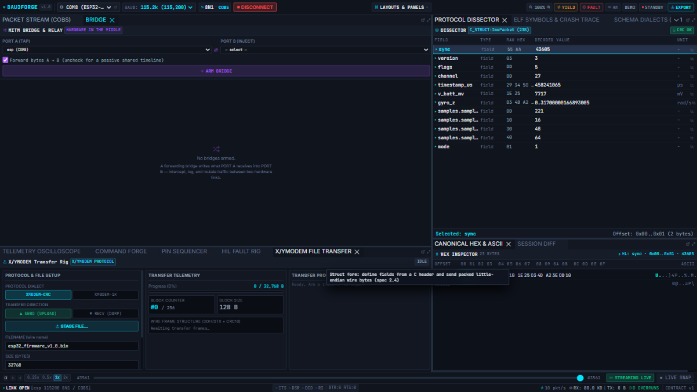

MITM Bridge & Relay
The bridge joins two ports in one engine session so you can sit between two hardware links — intercept, observe, relay, or forward traffic from one side to the other, with live counters on everything.

Arming a bridge
- PORT A (TAP) — pick the first session port.
- PORT B (INJECT) — pick the second.
- Forward bytes A → B — checked: a forwarding bridge (an inline MITM). Unchecked: a passive tap — both sides share one timeline, nothing is written across.
- ARM BRIDGE. The bridge joins the session immediately (it replaces the workspace's configured set — bridges from the
.bforge.toml[bridges]table are live from engine start).
Reading the traffic
- Frames from both ports appear in one Packet Stream timeline; the
DIRcolumn and port filter untangle them. - What a forwarding bridge writes to the other side appears as TX rows on the destination port showing the exact wire bytes — the workbench shows what left the engine, not only what arrived (D-79).
- The bridge row reports forwarded and dropped byte counters, live.
Backpressure, honestly
If the far side stops accepting bytes (a device that never reads its socket, a stalled link), the engine does not silently buffer forever: the outbox has a limit, and bytes beyond it are counted as dropped. A climbing dropped counter is the instrument telling you the other end is not consuming — on a real device that is your signal that its receive path is wedged.
Use cases
- Protocol translation probe: device A speaks proto-A; forward its frames into a test harness on port B.
- Inline logger: tap between a flight controller and its radio — one capture sees both directions.
- Fault-injection forwarder: arm the Fault Rig and everything forwarded to the device is corrupted — HIL testing with zero firmware changes.
Tips
- Both ports must be part of the same engine session (the pickers list real session ports; with none open the panel says so honestly).
- The
[bridges]table in the workspace file pre-arms bridges at engine start — commit your rig's bridge topology with the repo.